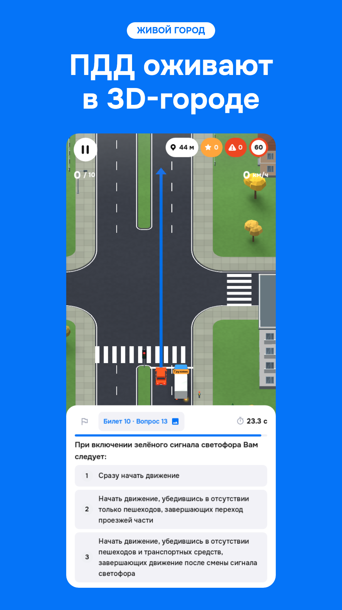
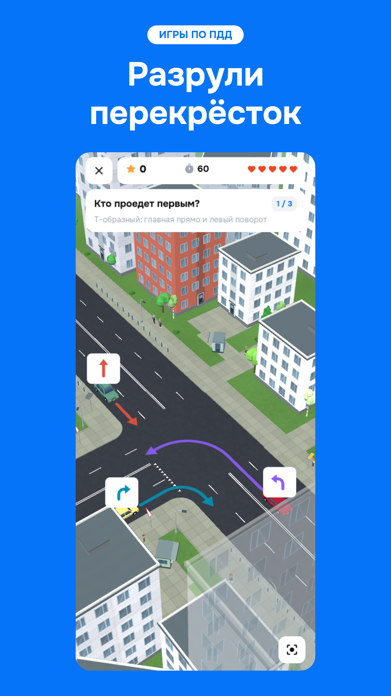
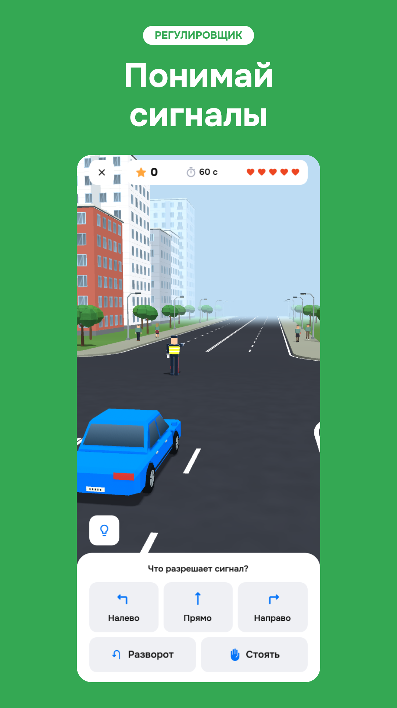
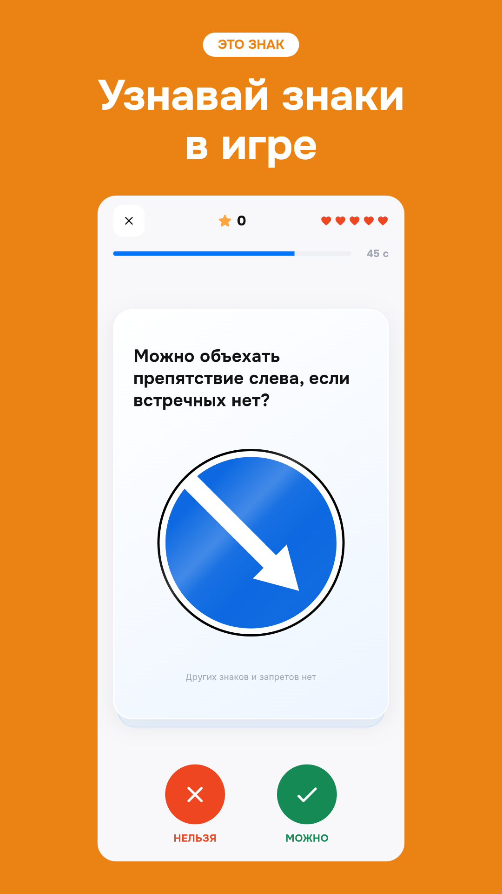
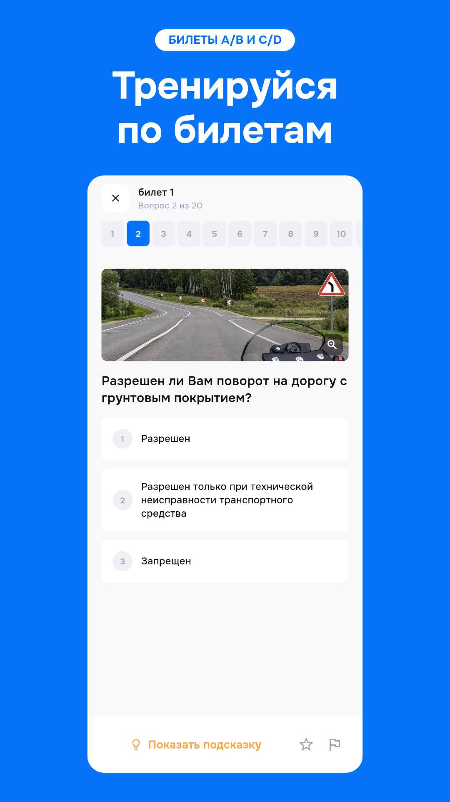
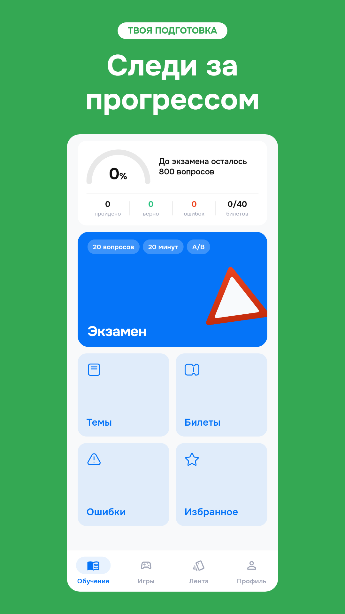

ПДД оживают в 3D-городе
Godot desktop Compatibility; captured PNG 586×1266, no upscaleШесть карточек: четыре про игры, билеты и прогресс. Короткие заголовки, реальные кадры, исходные изображения сохранены. Генератор изображений создал три концепта в generated/; экспорт для публикации сохраняет исходный интерфейс без перерисовки.
Перед загрузкой: сравнить с финальной подписанной версией на Android и iPhone. Godot снят на desktop, Flutter — в локальной web release. Геометрия файлов проверена; прохождение модерации и точное совпадение с финальным native UI этим не подтверждены.
Скачать все 18 файлов · ZIP · Манифест и размеры · Исходные кадры · Промпты ImageGen

ПДД оживают в 3D-городе
Godot desktop Compatibility; captured PNG 586×1266, no upscale
Разрули перекрёсток
Godot desktop Compatibility; captured PNG 586×1266, no upscale
Понимай сигналы
Godot desktop Compatibility; captured PNG 586×1266, no upscale
Узнавай знаки в игре
Local Flutter web release; Chrome 390×844 @3x
Тренируйся по билетам
Local Flutter web release; Chrome 390×844 @3x
Следи за прогрессом
Local Flutter web release; Chrome 390×844 @3x